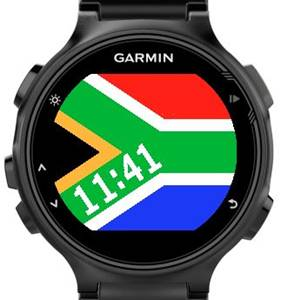

How do I use custom fonts?
This guest post was written by Hermo Terblanche, a Connect IQ developer in South Africa.
Have you ever seen an app in the Connect IQ app store that made you wonder, "That is so cool! How did the developer do that?" In order to draw attention to your app you need to stand out from the rest, by for example applying some really cool font tricks. I am going to let you in on some of my secrets from my own Connect IQ creations. Hopefully this will inspire you to create your very own jaw-dropping apps for Garmin Connect IQ devices.
Let's jump straight into the magic! You'll need the following tools:
BMFont - For exporting fonts to the required format for Connect IQ. You can read more about this in the Programmer's Guide as well as the UX Guide
Graphics editor / Tool - For editing font png files. I prefer to use Photoshop to achieve the desired effects, but they can also be achieved using GIMP
Font Reflection
This technique is really simple and could easily be achieved in one of two ways:
Approach A
For the watch face Summer Sunset, I used a free font called Sunset that I downloaded and exported to a PNG using BMFont.
This font combines each number and its corresponding reflection into a single glyph. This means that when you draw a number, it draws both the number and reflection as a single character.
The benefit of this approach is efficiency: you only need a single font which requires fewer resources and results in a smaller compiled PRG file. Also, your code also runs cheaper as you only need a single statement to draw the number which is more battery friendly. Finally, you don't have to separately manage the positioning of drawing a number's reflection, making this the simplest approach. The downside is that you cannot have separate colors for the number and its reflection because the glyph is treated as one atomic character, and only one color can be applied to the glyph as a whole.
To see the skyline behind the time, you first draw the skyline, then you specify a transparent background color for the font and finally draw the time on top of the skyline:
//draw skyline here
..
//load custom font
var font = Ui.loadResource( Rez.Fonts.Sunset );
//set the time's color and draw it
dc.setColor(Gfx.COLOR_DK_GREEN, Gfx.COLOR_TRANSPARENT);
dc.drawText(timeX,timeY, font, timeStr, Gfx.TEXT_JUSTIFY_CENTER);This approach is the most straightforward and does not need any further image processing of the font once it has been exported using the BMFont tool.
Approach B
The Reflection watch face is a bit more advanced and involves some image processing, but it offers the benefit of specifying a different color for the time and the reflection.
This approach uses two separate fonts. For this I also downloaded a free font and exported it to a PNG using BMFont. I then duplicated the *.PNG and *.FNT files and renamed them to something meaningful so I could easily distinguish between the files of the two different fonts. Using some Photoshop skills I transformed each glyph in the duplicated PNG file to look like a reflected character. It is important to keep in mind with this approach is that it works best with a monospaced font; having constant glyph sizes in both fonts makes it easier to align the normal and reflected time when drawing. Without going into too much detail about the exact image processing steps, here is a basic outline of what to do:
For each glyph (one at a time):
Use the selection tool to select a glyph
Use the transform menu and flip the selection vertically
Using the transform menu, either skew or distort the selection to get the desired angle of the character. Keep in mind that you cannot skew too much because you want the reflection of the time to still fit within the screen. In the screenshot above you will notice that the bottom of the reflected "1" touches the screen boundary. A more skewed effect will cause the reflected "1" to be clipped. You have to experiment a few times to get it right. This step is the most challenging, but also the most rewarding one!
You have to move the transformed selection to align it alongside other transformed glyphs. This makes it easier to specify the character coordinates in the *.FNT file.
Save the png for the reflection font once all glyphs have been transformed.
In Photoshop, use the selection tool to find the new x, y coordinates for each transformed glyph, and change the corresponding values in the duplicated *.FNT file.
Make sure to point the file property in the duplicated *.FNT file to the duplicated *.PNG (reflected font).
In code load your two fonts, and after you've drawn the normal time, you draw the same time using the reflection font. For the reflected time, you need to align the characters with the bottom of the normal time's characters.
Below is an illustration of some of the glyphs from the normal font and their corresponding reflected glyphs in the reflection font.
//load custom font for the normal time
var normalFont = Ui.loadResource( Rez.Fonts.Normal );
//load custom font for the reflected time
var reflectedFont = Ui.loadResource( Rez.Fonts.Reflected );
//set the normal time's color and draw it
dc.setColor(Gfx.COLOR_DK_GREEN, Gfx.COLOR_TRANSPARENT);
dc.drawText(timeX,timeY, normalFont, timeStr, Gfx.TEXT_JUSTIFY_CENTER);
//set the reflected time's color and draw it
dc.setColor(Gfx.COLOR_ORANGE, Gfx.COLOR_TRANSPARENT);
dc.drawText(offsetX,offsetY, reflectedFont, timeStr, Gfx.TEXT_JUSTIFY_CENTER);Fonts With Two Colors
Connect IQ supports only one color in custom fonts. This is because the font's PNG is a grayscale image and therefore has only one channel. You cannot create a font to display multiple colors. Below is an illustration of the concept that is not possible within a single font:
But fear not! With some clever tricks it is possible to create the effect of a font that displays multiple colors. The watch face Watch Me displays its time using two colors: white border and blue fill.
The magic behind this trick involves a combination of two fonts with different masks. Below is an illustration of some of the glyphs from the two different font masks. The top image is the font for the border, while the bottom font is for the inner fill. An easy way to remember which is which, is to remember that white is the area that will be drawn onto the screen in a color of your or the user's choice.
The top mask is the original font that was exported using the BMFont tool. For the bottom mask I created a duplicate of the top mask, and then basically inverted the colors to ensure it will only draw the inner area in a specific color.
//load custom font for the border
var borderFont = Ui.loadResource( Rez.Fonts.Border );
//load custom font for the inner fill
var innerFillFont = Ui.loadResource( Rez.Fonts.InnerFill );
//set the time's border color and draw it
dc.setColor(Gfx.COLOR_DK_GREEN, Gfx.COLOR_TRANSPARENT);
dc.drawText(timeX,timeY, borderFont, timeStr, Gfx.TEXT_JUSTIFY_CENTER);
//set the time's inner fill color and draw it
dc.setColor(Gfx.COLOR_ORANGE, Gfx.COLOR_TRANSPARENT);
dc.drawText(timeX,timeY, innerFillFont, timeStr, Gfx.TEXT_JUSTIFY_CENTER);Font With a Diagonal Orientation
The idea to write text with an orientation other than horizontal is not something I innovated; I first saw it in another watch face in the store. Being a curious developer I had to try it out myself. The result of this experiment can be seen in my watch face South Africa. The time is displayed diagonal in either an ascending or descending orientation based on a user's preference. Each orientation is created with its own separate font.

When drawing text diagonally, you can no longer draw the string as a single entity; otherwise you'll just end up with a horizontal line of text with tilted characters, similar to what you now see in the above illustration. The real trick is to draw each character individually, but for each character adjust the y and x coordinates appropriately. For descending orientation, you need to increase the y coordinates, and for ascending you need to decrease it. The x coordinate will always increase in both scenarios. The glyphs have to overlap each other in order to create the diagonal effect. This is where a transparent background color does the trick!
The angle of rotation that you would like for your font is all up to you and you can experiment with different degrees of rotation in your graphics editor. In order to know where to draw the next character, you could maintain an array of coordinates. It is a lot easier to manage and draw diagonal text using a monospaced font because any character can be drawn at the same coordinate without causing gaps of varying size between adjacent characters.
//predefined coordinates based on diagonal angle and orientation
var ascCoords = [[21,143],[42,129],[62,119],[73,108],[93,95]];
var descCoords = [[21,34],[42,48],[62,58],[73,69],[93,82]];
//set background color transparent to prevent clipping of characters
dc.setColor(Gfx.COLOR_WHITE, Gfx.COLOR_TRANSPARENT);
//string to be drawn
var time = clock.hour.format("d") + ":" + clock.min.format("d");
var coords, font;
//determine the font and coordinates to use based on orientation
if(Orientation == "Descending"){
coords = descCoords;
font = Ui.loadResource(Rez.Fonts.fontDesc);
}
else{
coords = ascCoords;
font = Ui.loadResource(Rez.Fonts.fontAsc);
}
//draw each character individually
for( var i = 0; i < time.length(); i++ ) {
var char = time.substring(i,i+1);
dc.drawText(coords[0], coords[1], font, char, Gfx.TEXT_JUSTIFY_LEFT);
}Dynamic Color Filling
In my signature watch face NoFrills, I use an easy trick to create a special effect that makes the time fill up with water. It effectively serves as a progress gauge for activity tracking, while at the same time conserves real estate on the screen. Talk about a dual-purpose clock!
You only need a single font for this trick, and best of all: there is no image processing required. Only the power of Connect IQ is enough to achieve this! Again, a monospace font provides the best results and is simpler to work with.
Determine the size and coordinates of the area (rectangle) that the text you would like to draw, will occupy on the screen.
Draw a filled rectangle of this size at the predetermined coordinates. The color of this rectangle should be the color that you would normally have used for the text.
Draw any special effects on top of the filled rectangle, but before you draw the text. In NoFrills' case, I draw the filled rectangle that represents the water level.
Set the foreground color of your text to transparent and the background color to something else, like the background color of the screen. This effectively creates a mask that clips everything you have drawn in the previous steps.
Now draw your text on top of it all, compile and run it and finally stare in awe at your amazing production!
//load custom font
var font = Ui.loadResource( Rez.Fonts.MyFont );
//draw filled rectangle to represent text's color
dc.setColor(Gfx.COLOR_WHITE, Gfx.COLOR_WHITE);
dc.fillRectangle(rectX, rectY, width, height);
//draw filled rectangle to represent water level
dc.setColor(Gfx.COLOR_BLUE, Gfx.COLOR_BLUE);
dc.fillRectangle(effectX, effectY, width, effectHeight);
//create and draw the clipping mask
dc.setColor(Gfx.COLOR_TRANSPARENT, Gfx.COLOR_BLACK);
dc.drawText(timeX, timeY, font, timeString, Gfx.TEXT_JUSTIFY_CENTER);You can find Hermo on Twitter, Facebook, Instagram, and the Connect IQ Developer Forum. See Hermo's Connect IQ apps in the Connect IQ Store.